原理介绍
在ECC中，利用特殊形式的椭圆曲线，其方程如下：
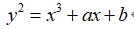
其中：
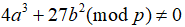
这个是用来排除单数曲线所必须的，其中a和b决定了曲线在坐标系的不同形状。
在开始之前我们需要引入一个定义——Abel（阿贝尔群）：
数学上是指定义了二元操作运算并且使用“+”表示的一个集合。必须满足以下要求：
1、封闭性（closure）：如果a和b都是群成员，那么a + b也应该是群成员。
2、组合性（associativity）：*(a+b)+c=a+(b+c)*
3、单位元：0值就是单位元。
4、逆元：a的逆元就是-a。
当然阿贝尔群除了上面的性质外还满足交换律公理ab=ba。
同样在椭圆曲线也可以定义阿贝尔群：
1、设O为单位元，对曲线上所有的点P都满足P+O=P。
2、对点P（x，y）有点Q（x，-y）满足P+Q=O，则称点Q为P的逆元，记为-P，在此基础上我们可以定义减法规则：P-Q=P+(-Q) 。
3、异点相加：对不同且不互逆的点P（x，y）与Q（a，b），即x≠a，Ep（a，b）则：P(x , y)+Q(c , d)=S(i , j)
其中：
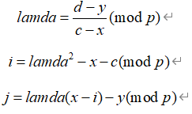
4、倍点原则：对于一个点P（x，y），若P≠-P，即y≠0，Ep（a，b）则有：
P(x,y)+P(x,y)=2P(x,y)=S(i.j)
其中：
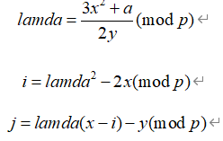
并不是所有的点都可以求倍点，同样也不是所有的点都可以用来建立椭圆曲线系统，所以就引入了有限域椭圆曲线点的阶。
设P是椭圆Ep（a，b）上的点，若存在最小的正整数n使得：nP=O（O是无穷远的点）则称n为P的阶，若n不存在，则称P是无限阶的。
若一个群G的每一个元都是G的某一个固定元a的乘方，则称G为循环群记为：
a称为G的一个生成元。
在某些条件下，椭圆曲线上所有的点构成一个循环群，并且一定存在一个本原元，它的幂值生成了整个群（这就是离散对数问题）。
给定一个椭圆曲线E，确定本原元P和一个元素T，那么离散对数问题就是找到整数D，满足：P+P+P+….+P=DP=T
在密码体制中，D通常为整数，也是私钥，曲线上的点T是公钥。
至此，椭圆曲线的原理基本以阐述完毕，总结如下：
椭圆曲线Ep（a，b）上的点G，n为G的阶*(nG=O∞)，d为小于n的整数。考虑方程：P=dG*
其中P,G属于E，d为整数。
由d，G计算P很容易，而有P,G求d计算上是不可行的。
这就是椭圆曲线密码体制安全的基础，又叫做椭圆曲线的离散对数问题。
其中点G为基点，d（d<n）为私有密钥，P为公开密钥。
程序设计
取一素数p，两个参数a，b，得到Ep（a，b）。
利用公式验证所得曲线为可用曲线，判断公式：
画出椭圆曲线的图，得知隐函数的情况下调用ezplot画出椭圆曲线的图。
画出曲线的散点图，计算方法与公式如下：
计算x=0至*x=(p-1)*中，计算：
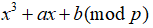
其中若能求的整数平方根的数则为有效点，同时计算出:
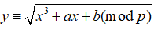
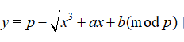
取基点G，由G计算出曲线的阶n，计算公式为：*(n-1)G=-G*
写出-G的计算公式：*-G(x ,z)=G(x ,-1y)mod p = G(x ,p-y)*
选取私有密钥key（key<n），计算公开密钥K=keyG
有了上述内容，可以着手设计加密解密步骤了。
加密步骤：输入一个随机数r（r<n）作为加密方的私钥，利用输入的随机数生成点:
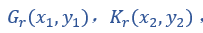
G_r为加密方的公钥，用到的公式如下：
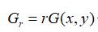
K_r为共享密钥，计算公示如下：
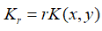
将明文转化为密文，利用K_r的x轴坐标作为加密密钥，公式如下：
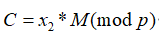
解密步骤：利用加密方传回的密文C和G_r求解M，在知道 和己方私钥的情况下求解M是十分容易的，先解出共享密钥K_r，利用其x轴坐标用简单的公式：
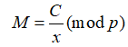
最终得到想要的明文M。
思维导图如下：
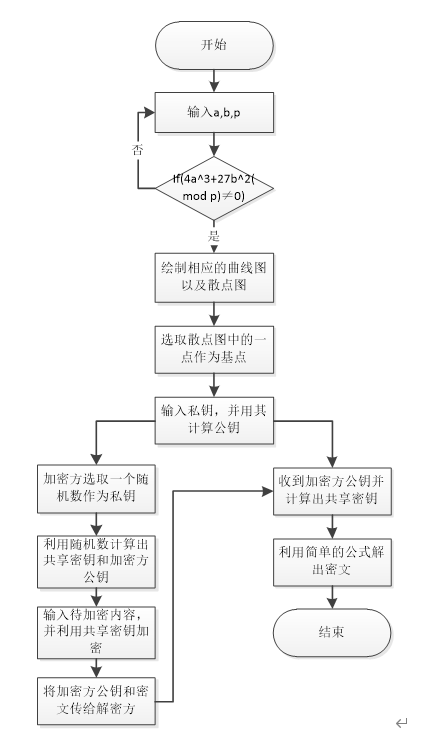
运行结果演示
代码见附录，这里只演示。
请输入a的值：10
请输入b的值：5
请输入p的值：23
请确曲线：1确认，0退出
1
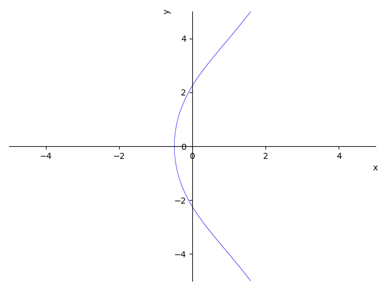
椭圆曲线的散列图为：
22 - - - - - - - - - - 1 - - - - - - - - - - - -
21 - - - - - - - 1 - - - - - - - - - - - - - - -
20 - - - - - - - - - - - - - 1 - - - - - - - - -
19 - 1 - 1 - - - - - - - - - - - - - - - 1 - - -
18 - - - - - - - - - - - - - - - - - - - - - - -
17 - - - - - - - - - - - - 1 - - - - - - - - - -
16 - - - - - - - - - - - - - - - - - - - - - - -
15 - - - - - - - - - - - - - - - - - - - - - - -
14 - - - - - - - - - - - - - - - - - - - - - - -
13 - - - - - - - - - - - - - - - - - - - - - - -
12 - - - - - - - - - - - - - - - - 1 - - - - - -
11 - - - - - - - - - - - - - - - - 1 - - - - - -
10 - - - - - - - - - - - - - - - - - - - - - - -
9 - - - - - - - - - - - - - - - - - - - - - - -
8 - - - - - - - - - - - - - - - - - - - - - - -
7 - - - - - - - - - - - - - - - - - - - - - - -
6 - - - - - - - - - - - - 1 - - - - - - - - - -
5 - - - - - - - - - - - - - - - - - - - - - - -
4 - 1 - 1 - - - - - - - - - - - - - - - 1 - - -
3 - - - - - - - - - - - - - 1 - - - - - - - - -
2 - - - - - - - 1 - - - - - - - - - - - - - - -
1 - - - - - - - - - - 1 - - - - - - - - - - - -
0 - - - - - - - - - - - - - - - - - - - - - 1 -
0 1 2 3 4 5 6 7 8 9 10 11 12 13 14 15 16 17 18 19 20 21 22
1：在如上坐标系中选一个值为G的坐标
1：请输入选取的x坐标值：10
1：请输入选取的y坐标值：1
1：请输入私钥小key（<9）：8
2：请输入一个整数k（<9）用于求kG和kQ：7
2：请输入需要加密的字符串:ECC加密算法
密文为：(16,11),1104-(16,11),1072-(16,11),1072-(16,11),338432-(16,11),375904-(16,11),506224-(16,11),445776-
1解密得到明文：ECC加密算法
结束
ECC加密算法的优点
1、安全性高：攻击有限域上的离散对数问题可以使用指数积分法，其运算的复杂度
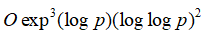
其中p是模数（为素数）。而它对于椭圆曲线上的离散对数问题并不有效。目前攻击椭圆曲线上离散对数问题的方法只有适合攻击任何循环群上离散对数问题的大步小步法，其运算复杂度为：
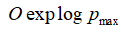
其中P_max是椭圆曲线所形成的Abel群的阶的最大因子。因此，椭圆曲线密码体制比基于有限域上的离散对数问题的公钥体制更加安全
2、密钥量小：由攻击两者的算法复杂度可知，在实现相同的安全性能条件下，椭圆曲线密码体制所需的密钥量远比基于有限域上的离散对数问题的公钥体制的密钥量小
3、灵活性好：有限域GF(q)一定情况下，其上的循环群(即GF(q)-{0})就定了。而GF(q)上的椭圆曲线可以通过改变曲线参数，得到不同的曲线，形成不同的循环群。因此，椭圆曲线具有丰富的群结构和多选择性。
正是由于椭圆曲线具有丰富的群结构和多种选择性，并可在保持和RSA/DSA体制同样安全性能的前提下，大大缩短了密钥长度(目前160比特足以保证安全性)，因而在密码领域有着广阔的引用前景。下表给出了椭圆曲线密码体制和RSA/DSA体制在保持同等安全的条件下各自所需的密钥长度。
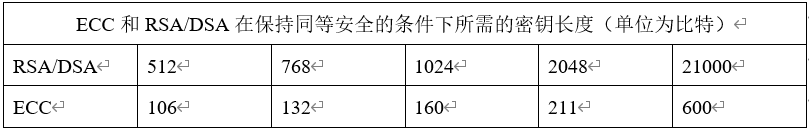
附录
1. #-*- codeing = utf-8 -*-
2. #@Time : 2020/2/24 11:46
3. #@Author : Friats
4. #@File : ECC.py
5. #@Software : PyCharm
6. import matplotlib.pyplot as mp
7. from sympy.parsing.sympy_parser import parse_expr
8. from sympy import plot_implicit
9.
10. """
11. 变量定义如下
12. a:椭圆曲线参数a
13. b:椭圆曲线参数b
14. p:椭圆曲线参数p
15. n:曲线的阶n
16. G_x:基点G的x轴坐标
17. G_y:基点G的y轴坐标
18. KEY_x:解密方公钥x轴坐标
19. KEY_y:解密方公钥y轴坐标
20. key:解密方私钥
21. K_G_x:加密方公钥x轴坐标
22. K_G_y:加密方公钥y轴坐标
23. K_Q_x:共享密钥x轴坐标
24. K_Q_y:共享密钥y轴坐标
25. """
26. """
27. 函数定义如下
28. get_inverse(): 取逆元
29. get_gcd(): 取最大公约数
30. get_np(): 求解公式Q=np
31. get_rank(): 求曲线的阶n
32. get_param(): 计算p和-p
33. get_graph(): 求解并计算散点图
34. get_ng(): 计算nG
35. """
36.
37. def get_inverse(mu, p):
38. """
39. 取逆元
40. :param mu: 输入参数1
41. :param p: 曲线的参数p
42. :return: 参数1的逆元，-1逆元不存在
43. """
44. for i in range(1, p):
45. if (i*mu)%p == 1:
46. return i
47. return -1
48.
49. def get_gcd(zi, mu):
50. """
51. 用递归求出最大公约数
52. :param zi: 输入参数1
53. :param mu: 输入参数2
54. :return: 最大公约数
55. """
56. if mu:
57. return get_gcd(mu, zi%mu)
58. else:
59. return zi
60.
61.
62. def get_np(x1, y1, x2, y2, a, p):
63. """
64. 求解公式Q=np
65. :param x1: 点1的x轴坐标
66. :param y1: 点1的y轴坐标
67. :param x2: 点2的x轴坐标
68. :param y2: 点2的y轴坐标
69. :param a: 曲线参数a
70. :param p: 曲线参数p
71. :return: 返回Q的坐标
72. """
73. flag = 1 # 定义符号位（+/-）
74.
75. # 如果 p=q k=(3x2+a)/2y1mod p
76. if x1 == x2 and y1 == y2:
77. zi = 3 * (x1 ** 2) + a # 计算分子 【求导】
78. mu = 2 * y1 # 计算分母
79.
80. # 若P≠Q，则k=(y2-y1)/(x2-x1) mod p
81. else:
82. zi = y2 - y1
83. mu = x2 - x1
84. if zi* mu < 0:
85. flag = 0 # 符号0为-（负数）
86. zi = abs(zi)
87. mu = abs(mu)
88.
89. # 将分子和分母化为最简
90. gcd_value = get_gcd(zi, mu) # 最大公約數
91. zi = zi // gcd_value # 整除
92. mu = mu // gcd_value
93. # 求分母的逆元 逆元： ∀a ∈G ，ョb∈G 使得 ab = ba = e
94. # P(x,y)的负元是 (x,-y mod p)= (x,p-y) ，有P+(-P)= O∞
95. inverse_value = get_inverse(mu, p)
96. k = (zi * inverse_value)
97.
98. if flag == 0: # 斜率负数 flag==0
99. k = -k
100. k = k % p
101. # 计算x3,y3 P+Q
102. """
103. x3≡k2-x1-x2(mod p)
104. y3≡k(x1-x3)-y1(mod p)
105. """
106. x3 = (k ** 2 - x1 - x2) % p
107. y3 = (k * (x1 - x3) - y1) % p
108. return x3,y3
109.
110. def get_rank(x0, y0, a, p):
111. """
112. 计算曲线的阶n
113. :param x0: 输入点的x轴坐标
114. :param y0: 输入点的y轴坐标
115. :param a: 曲线参数a
116. :param p: 曲线参数p
117. :return: 曲线的阶n
118. """
119. x1 = x0 #-p的x坐标
120. y1 = (-1*y0)%p #-p的y坐标
121. tempX = x0
122. tempY = y0
123. n = 1
124. while True:
125. n += 1
126. # # 求p+q的和，得到n*p，直到求出阶
127. p_x,p_y = get_np(tempX, tempY, x0, y0, a, p)
128. # 如果 == -p,那么阶数+1，返回
129. if p_x == x1 and p_y == y1:
130. return n+1
131. tempX = p_x
132. tempY = p_y
133.
134.
135. def get_param(x0, a, b, p):
136. """
137. 计算P和-P
138. :param x0:点的x轴坐标
139. :param a:曲线参数a
140. :param b:曲线参数b
141. :param p:曲线参数p
142. :return:点P和-P
143. """
144. y0 = -1
145. for i in range(p):
146. # 满足取模约束条件，椭圆曲线Ep(a,b)，p为质数，x,y∈[0,p-1]
147. if i**2%p == (x0**3 + a*x0 + b)%p:
148. y0 = i
149. break
150.
151. # 如果y0没有，返回false
152. if y0 == -1:
153. return False
154.
155. # 计算-y（负数取模）
156. x1 = x0
157. y1 = (-1*y0) % p
158. return x0,y0,x1,y1
159.
160. def get_graph(a, b, p):
161. """
162. 求解并计算散点图
163. :param a: 曲线参数a
164. :param b: 曲线参数b
165. :param p: 曲线参数p
166. :return: 返回一个二维数组并打印，大小[p][p]
167. """
168. x_y = []
169. # 初始化二维数组，将所有的数组元素用-填充
170. for i in range(p):
171. x_y.append(['-' for i in range(p)])
172.
173. for i in range(p):
174. val =get_param(i, a, b, p) # 椭圆曲线上的点
175. if(val != False):
176. x0,y0,x1,y1 = val
177. x_y[x0][y0] = 1
178. x_y[x1][y1] = 1
179.
180. print("椭圆曲线的散列图为：")
181. for i in range(p): # i= 0-> p-1
182. temp = p-1-i # 倒序
183.
184. # 格式化输出1/2位数，y坐标轴
185. if temp >= 10:
186. print(temp, end=" ")
187. else:
188. print(temp, end=" ")
189.
190. # 输出具体坐标的值，一行
191. for j in range(p):
192. print(x_y[j][temp], end=" ")
193. print("") #换行
194.
195. # 输出 x 坐标轴
196. print(" ", end="")
197. for i in range(p):
198. if i >=10:
199. print(i, end=" ")
200. else:
201. print(i, end=" ")
202. print('\n')
203.
204. def get_ng(G_x, G_y, key, a, p):
205. """
206. 求解nG
207. :param G_x: G的x轴坐标
208. :param G_y: G的y轴坐标
209. :param key: 解密方私钥
210. :param a: 曲线参数a
211. :param p: 曲线参数p
212. :return: nG的坐标
213. """
214. temp_x = G_x
215. temp_y = G_y
216. while key != 1:
217. temp_x,temp_y = get_np(temp_x,temp_y, G_x, G_y, a, p)
218. key -= 1
219. return temp_x,temp_y
220.
221. def main():
222. while True:
223. a = int(input("请输入a的值："))
224. b = int(input("请输入b的值："))
225. p = int(input("请输入p的值：")) #用作模运算
226. # 条件满足判断
227. if((4*(a**3)+27*(b**2))%p == 0):
228. print("您输入的参数有误，请重新输入！！！\n")
229. else:
230. break
231. #利用隐函数画出椭圆曲线大致的图
232. ezplot = lambda expr: plot_implicit(parse_expr(expr))
233. ttte ='x*x*x+x*' + str(a) +'+' + str(b) + '-y*y'
234. ezplot(ttte)
235. mp.show()
236. #确认输入图谱
237. tur = int(input("请确曲线：1确认，0退出\n"))
238. if tur !=0 :
239. # 输出椭圆曲线散点图
240. get_graph(a, b, p)
241. # 选点作为G点
242. print("1：在如上坐标系中选一个值为G的坐标")
243. G_x = int(input("1：请输入选取的x坐标值："))
244. G_y = int(input("1：请输入选取的y坐标值："))
245. # 获取椭圆曲线的阶
246. n = get_rank(G_x, G_y, a, p)
247. # user1生成私钥，小key
248. key = int(input("1：请输入私钥小key（<{}）：".format(n)))
249. # user1生成公钥，大KEY
250.
251.
252. KEY_x, kEY_y = get_ng(G_x, G_y, key, a, p)
253.
254. # user2阶段
255. # user2拿到user1的公钥KEY，Ep(a,b)阶n，加密需要加密的明文数据
256. # 加密准备
257. k = int(input("2：请输入一个整数k（<{}）用于求kG和kQ：".format(n)))
258. k_G_x, k_G_y = get_ng(G_x, G_y, k, a, p) # kG
259. k_Q_x, k_Q_y = get_ng(KEY_x, kEY_y, k, a, p) # kQ
260.
261. # 加密
262. plain_text = input("2：请输入需要加密的字符串:")
263. plain_text = plain_text.strip()
264. # plain_text = int(input("user1：请输入需要加密的密文："))
265. c = []
266. print("密文为：", end="")
267. for char in plain_text:
268. intchar = ord(char)
269. cipher_text = intchar * k_Q_x
270. c.append([k_G_x, k_G_y, cipher_text])
271. print("({},{}),{}".format(k_G_x, k_G_y, cipher_text), end="-")
272.
273. # user1阶段
274. # 拿到user2加密的数据进行解密
275. # 知道 k_G_x,k_G_y，key情况下，求解k_Q_x,k_Q_y是容易的，然后plain_text = cipher_text/k_Q_x
276. print("\n1解密得到明文：", end="")
277. for charArr in c:
278. decrypto_text_x, decrypto_text_y = get_ng(charArr[0], charArr[1], key, a, p)
279. print(chr(charArr[2] // decrypto_text_x), end="")
280.
281. if __name__ == "__main__":
282. #调用函数,作为程序的入口,自定义程序运行顺序
283. main()
284. print("\n结束") 以上便是本文所有内容了，如果喜欢请收藏本站